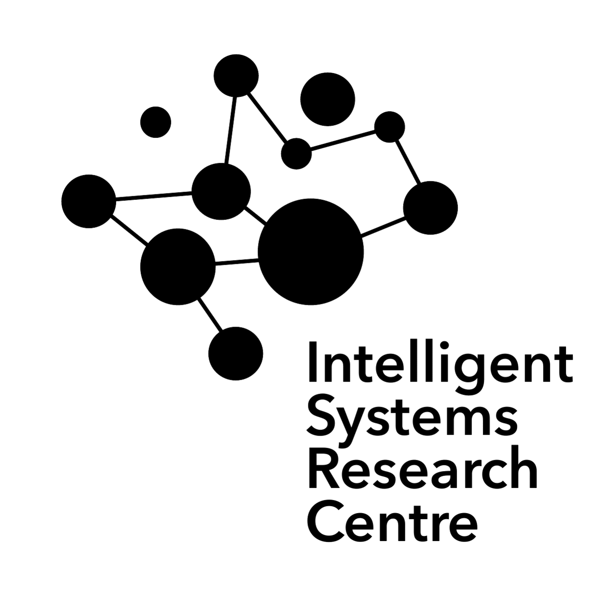
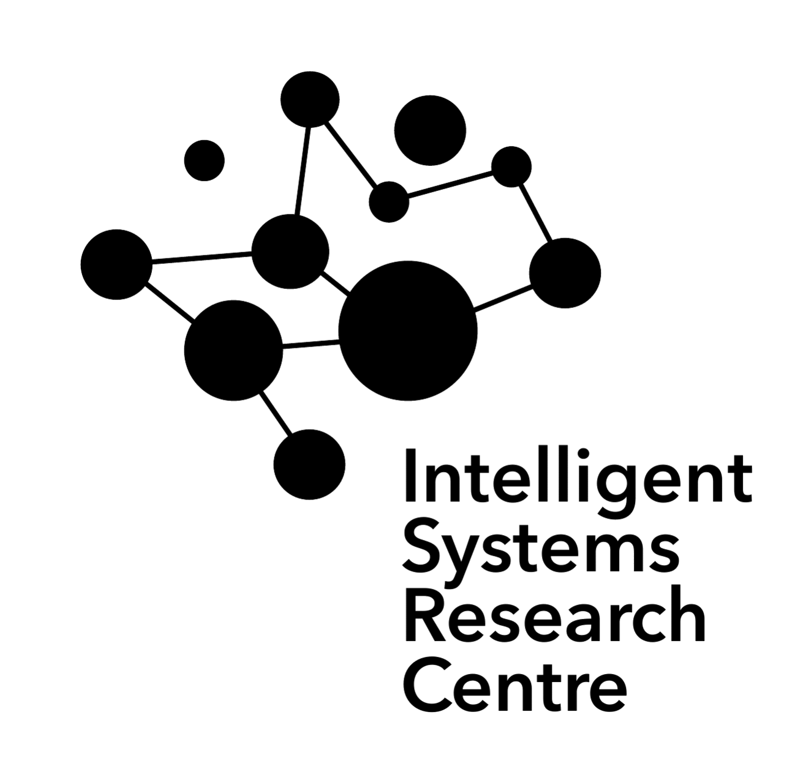

I did my undergraduate (MA Dubl.) in mathematics in Trinity College Dublin.
After this I obtained a PGCE (Mathematics) from Queen's University Belfast (QUB), and taught Mathematics, Further Mathematics, and Physics for a short while, before returning to academia to undertake a further Masters in Research (QUB), and then begin a PhD in Mathematical and Computational Neuroscience in the Intelligent Systems Research Centre, Magee Campus, Ulster University.
I am also involved in a visiting research collaboration at the University of Bristol.
As for my research, see
here for more detail, but I am interested in (neural) networks from a complex systems, maths, neuroscience, and machine learning perspective.
This involves network structure / dynamics / function, reservoir computing, brain connectome data, applied topology, and synaptic plasticity.
- poster - Discepolo, L, McAllister, J, Margetts-Smith, G, Russell, R, Apilado, S, Grant, S, O'Donnell, C, Ashby, M, Anastasiades, P, "Characterisation of synapse development in prefrontal and somatosensory cortex", British Neuroscience Association, April 2025, https://pmc.ncbi.nlm.nih.gov/articles/PMC12038215/
- poster - McAllister, J, Houghton, C, Wade, J, and O'Donnell, C, "Structure-function relationships in connectome echo state networks", Computational and Systems Neuroscience (CoSyNe), March 2025, https://doi.org/10.5281/zenodo.15350011
- paper - McAllister, J, Wade, J, Houghton, C, and O'Donnell, C, "Topological and simplicial features of reservoir computing networks", UK Computational Intelligence, 2024, https://link.springer.com/chapter/10.1007/978-3-031-78857-4_5
- poster - McAllister, J, Wade, J, Houghton, C, and O'Donnell, C, "Random and biological network connectivity for reservoir computing", UK Neural Computation Conference, Sheffield, July 2024, https://doi.org/10.5281/zenodo.13303677
- poster - McAllister, J, Wade, J, and O'Donnell, C, "Heterosynaptic plasticity rules induce small-world network topologies", International Conference of Mathematical Neuroscience, Dublin, June 2024, https://doi.org/10.5281/zenodo.13303384
I am in the
O'Donnell Group computational neuroscience research group, split between the ISRC, Ulster University, Northern Ireland, and University of Bristol, in south-west England.
This group is also linked with the
Houghton group - another computational neuroscience group which is based in the University of Bristol.
 
